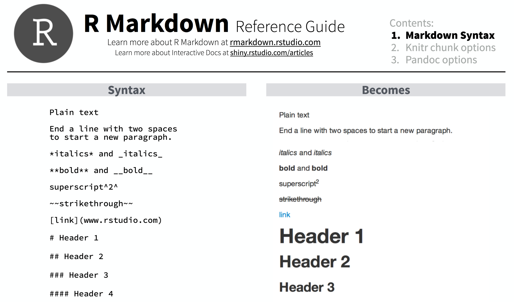
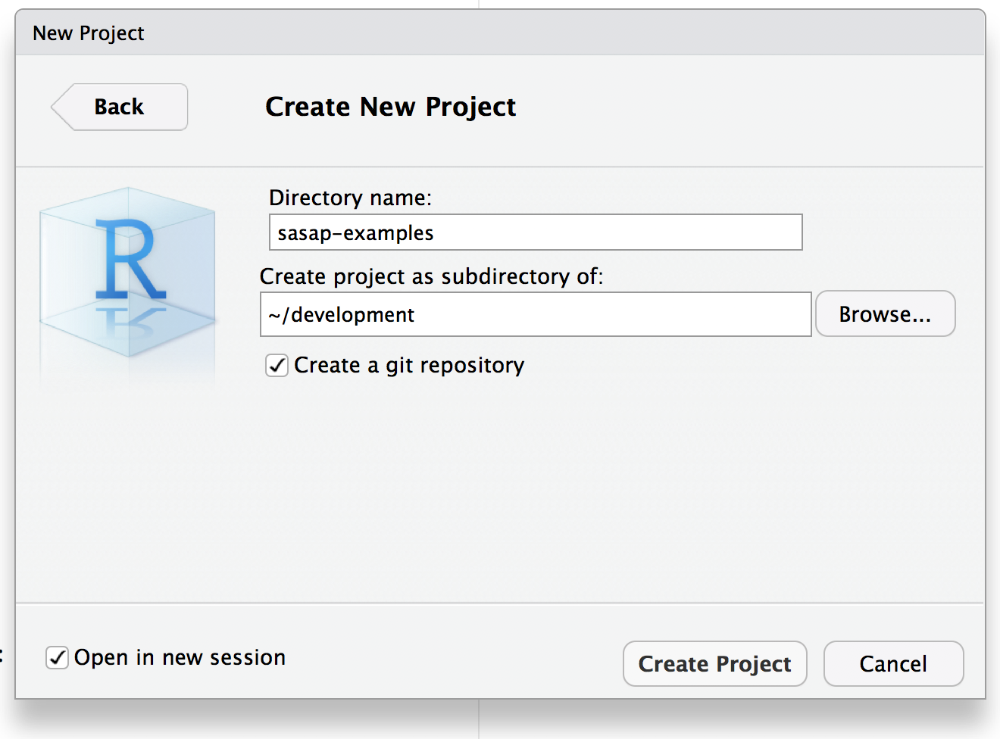

4 Literate Analysis with RMarkdown
4.1 Learning Objectives
In this lesson, you will learn:
- How plain text, Markdown, and RMarkdown differ
- How to write reports using RMarkdown
- How to integrate RMarkdown into your projects
- How RMarkdown enables literate and reproducible analysis
4.2 What is (R)Markdown?
Markdown is a text format that embeds formatting directives in plain text documents in a natural way that doesn’t interfere with naturally reading the document as a text document. This is conducive to preservation, as text documents are excellent archival formats. For example, here is the start of a markdown document:
# Assessment report
- _Division_: Commercial Fisheries
- _Date_: 2017-10-10Plain text is a great way to write information down. Plain text has some major advantages:
- Works regardless of what decade you’re trying to read the file, i.e. computers have and will continue to speak plain text but MS Word formats will continue to be a pain in the neck forever
- Works perfectly with version control software like git. MS Word does not.
- Easy to read, easy to write
- Can embed code right in the narrative for seamless reproducibility
Markdown is a plain text format that allows for common typesetting features including:
- Text formatting (bold, italic, etc.)
- Links
- Tables
- In-lined images
- Code
Markdown minimized the need for spending time typesetting, which is tedious and usually unnecessary. So if we want those kinds of things, we might want to use Markdown.
RMarkdown is an extension to Markdown that allows several additional formatting directives, most notably code blocks that let you embed R code in your document. When the document is processed, the code blocks can be executed, so that code output like figures can be included directly in the formatted document. For example, here’s a code block that generates a simple graph of random data in R (don’t try this in Word!):
library(ggplot2)
ggplot(data.frame(x=rnorm(100), y=rnorm(100)), aes(x, y)) + geom_point()RMarkdown allows us to produce several kinds of output document (web, PDF, DOCX) based on this mix of Markdown and R code. This lets us write analyses in R as we already do but also write our reports/papers/etc. in R. Instead of the usual loop:
- Run analysis
- Copy and paste graphics and tables into Word
- (forget where stuff came from)
- Edit/update report in Word
The loop becomes:
- Edit RMarkdown
- Generate fully reproducible report
Good resources:
4.3 What’s possible with RMarkdown
RMarkdown supports a number of formatting directives. Some of the more useful include:
- Headings (H1 - H6)
- Formatting (bold, italics,
strikethrough, superscript1) - Links: Reproducible Analysis
- Images
- Inline equations: \(A = \pi*r^{2}\)
- Lists
- Tables
- Code blocks
- Citations
For example, the RMarkdown Reference Guide by RStudio shows how several of these directives would be formatted:

We will review each of these by building a an RMarkdown document from scratch in RStudio.
4.4 RMarkdown overview
Let’s create a an RStudio project called sasap-examples to be used for the examples in
this tutorial. From within RStudio choose File | New Project…, and create
a project in a new directory:

Then, from within RStudio choose File | New File | RMarkdown file, and name
the file practice.Rmd
 Then Save the file as
Then Save the file as practice.Rmd. You’ll note that RStudio filled in some
example text in the Rmd file to get you started.
4.4.1 Knitting the file
To see the rendered version of the file, hit the Knit button on the top of the editing pane, which will produce the formatted view of the file:
4.4.2 Basic formatting
Use __bold__, *italics*, and ~~strikethough~~, and many others.Use bold, italics, and strikethough, and many others.
4.4.3 Links
Links can be simply pasted in to show the whole URL like https://dataone.org, or
can be linked to a specific chunk of text, e.g., to the [DataONE](https://dataone.org) project.Links can be simply pasted in to show the whole URL like https://dataone.org, or can be linked to a specific chunk of text, e.g., to the DataONE project.
4.4.4 Images
Images are like links, but prepended with an ! exclamation point.

Note how relative paths can be used to locate the file in the images folder.
4.4.5 R Code Chunks
Code chunks (also called fenced code blocks) are created using three sequential backticks to start the block, then the name of the interpreter to use to execute the code (usually r), and then three backticks to end the block. For example:
```{r chunk-name-no-spaces, eval=TRUE}
x <- 2
print(x^3)
```## [1] 8There are a large variety of chunk options for controlling the output.
4.4.6 Inline R expressions and equations
Just type what you want, like an equation like $\sqrt{2}$ that would be
calculated with R as `r sqrt(2)`.Just type what you want, like an equation like \(\sqrt{2}\) that would be calculated with R as 1.4142136.
Formatting for equations uses MathJax to render even complicated equations nicely: \[\sum_{i=0}^n i^2 = \frac{(n^2+n)(2n+1)}{6}\]
4.4.7 Plots
The power of code chunks in RMarkdown lies in the ability to generate graphs and
figures right inline. You can use base graphics, or more advanced libraries like
ggplot2 and leaflet.
Base graphics: Just run plot(1:10)
plot(1:10)
You can also use the full featues of ggplot:
library(ggplot2)
ggplot(data.frame(x=rnorm(100), y=rnorm(100)), aes(x, y)) + geom_point()Customize output sizing with chunk options: fig.width, fig.height, etc.
4.4.8 Tables
You can render a simple table inline:
| x | y | z |
|-----|-----|-----|
| 1 | 2 | 3 |
| 4 | 5 | 6 || x | y | z |
|---|---|---|
| 1 | 2 | 3 |
| 4 | 5 | 6 |
However, more likely, you’ll want to format some data from a data frame as a
table that is pageable, searchable, and sortable. One really nice way is to use
DT::datatable(), like so:
data("mpg")
DT::datatable(mpg, caption="Mileage")If you search around, there are tons of ways to do this. The simplest way is
with the kable function from the knitr package, which is bare-bones but effective:
data("mpg")
knitr::kable(head(mpg))| manufacturer | model | displ | year | cyl | trans | drv | cty | hwy | fl | class |
|---|---|---|---|---|---|---|---|---|---|---|
| audi | a4 | 1.8 | 1999 | 4 | auto(l5) | f | 18 | 29 | p | compact |
| audi | a4 | 1.8 | 1999 | 4 | manual(m5) | f | 21 | 29 | p | compact |
| audi | a4 | 2.0 | 2008 | 4 | manual(m6) | f | 20 | 31 | p | compact |
| audi | a4 | 2.0 | 2008 | 4 | auto(av) | f | 21 | 30 | p | compact |
| audi | a4 | 2.8 | 1999 | 6 | auto(l5) | f | 16 | 26 | p | compact |
| audi | a4 | 2.8 | 1999 | 6 | manual(m5) | f | 18 | 26 | p | compact |
4.5 Literate analysis with RMarkdown
The idea behind literate analysis is to interleave the narrative of a scientific project with its methods and code to seamlessly document the exact relationships among the prose, the figures and tables, the code that produced them, and the data that was used by the code. Literate analysis is the inverse of commenting your code, as it lets you turn your paper into a living, executable analysis. A literate analysis using RMarkdown is fully reproducible, in that everything needed to understand the analysis and reproduce it is directly in the document. When done well, a user should be able to trace from the raw data through all data cleaning, integration, analysis, modeing, and visualization steps that lead to the final set of figures and tables that are embedded directly in the narrative.
While an RMarkdown document is a single, linear exposition of a project, you can still
modularize your code with functions and packages to make the code both more readable
and more re-usable. While one can certainly define functions within an
RMarkdown document, for most analyses of even moderate complexity, we recommend separating
functions into separate files and packages that can be defined and reused. The
package rrtools (Marwick 2017) provides a convenient convention for
organizing code into reusable modules using R’s standard package layout.
4.6 Organizing a reproducible research folder
The rrtools package creates a folder convention for keeping code, data, and research
results organized. For a project named sasap_training, the rrtools package
could be used to organize and structure the project in a standard way. To start
a project with RRtools, use:
# Install package (run if needed)
# remotes::install_github("benmarwick/rrtools")
rrtools::use_compendium("~/Desktop/sasapexample")
# Then, from within the created package, run:
rrtools::use_readme_rmd()
rrtools::use_analysis()which produces a new RStudio project with specific folders for each type of data and code for the analysis with the following layout:
sasap_training
├── CONDUCT.md
├── CONTRIBUTING.md
├── DESCRIPTION
├── R
│ ├── data_load.R
│ ├── diversity_functions.R
│ ├── stock_functions.R
├── README.Rmd
├── analysis
│ ├── data
│ │ ├── derived_data
│ │ │ ├── salmon_asl_integrated.csv
│ │ └── raw_data
│ │ │ ├── salmon_asl_southeast.csv
│ │ │ ├── salmon_asl_central.csv
│ │ │ ├── salmon_asl_kuskokwim.csv
│ ├── figures
│ │ │ ├── figure_01.png
│ ├── paper
│ │ ├── journal-of-archaeological-science.csl
│ │ ├── paper.Rmd
│ │ └── references.bib
└── salmonstock.RprojIn this structure, untouched raw data would go in the analysis/data/raw_data folder,
re-usable code functions go in the R folder, and the Rmd file associated with
the manuscript goes into analysis/paper/paper.Rmd along with associated bibliographic
files. Note that the data in derived_data would ideally be produced by running
the code in paper.Rmd, which would execute functions from data_load.R to create
the derived data file, which in turn would be analyzed and visualized by other functions
found in the R folder. In this way, the complete analysis from raw data through to a
completely formatted manuscript would be represented by the paper.Rmd, with all
data and dependencies fully specified. This is truly a reproducible computation.
- Further reading: (Marwick, Boettiger, and Mullen 2017)
References
Marwick, Ben. 2017. Rrtools: Creates a Reproducible Research Compendium. https://github.com/benmarwick/rrtools.
Marwick, Ben, Carl Boettiger, and Lincoln Mullen. 2017. “Packaging Data Analytical Work Reproducibly Using R (and Friends).” PeerJ Preprints 5 (August): e3192v1. https://doi.org/10.7287/peerj.preprints.3192v1.